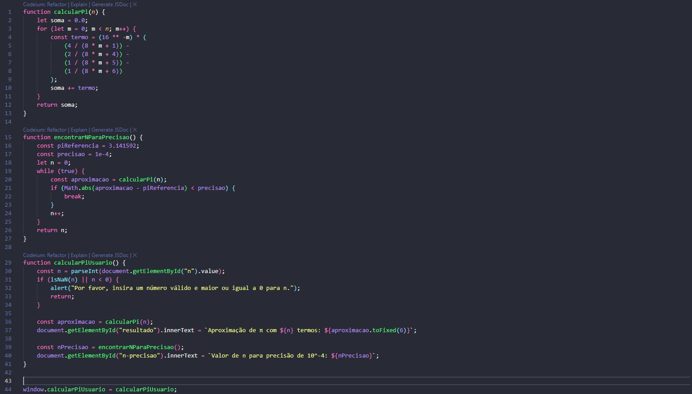

Calculamos uma aproximação do número π (pi) utilizando uma série matemática conhecida por fórmula de Bailey-Borwein-Plouffe (BBP), que permite calcular diretamente o n-ésimo dígito de π em base 16 (hexadecimal) sem a necessidade de calcular os dígitos anteriores. A série é dada por:
Cada termo da série contribui para a precisão do valor de π. Quanto mais termos forem somados, mais próxima será a aproximação do valor real de π. A série converge rapidamente, o que significa que poucos termos são necessários para obter uma boa aproximação de π e quanto maior o valor de n, mais próxima a aproximação será do valor real de π.
A fórmula de Bailey-Borwein-Plouffe (BBP) é uma das séries mais eficientes para calcular π. Ela foi descoberta em 1995 e é amplamente utilizada em cálculos de alta precisão devido à sua rápida convergência. A principal vantagem da série BBP é que ela permite calcular dígitos específicos de π em base 16 sem a necessidade de calcular os dígitos anteriores, o que a torna ideal para implementações computacionais.
Além da série BBP, existem outros métodos para calcular π. Aqui estão alguns exemplos:
Cada método tem suas vantagens e desvantagens, e a escolha depende da aplicação e da precisão desejada.
Uma imagem que ilustra o código utilizado para calcular a aproximação de π:
Acessar o notebook completo no Google Colab para explorar o código e os gráficos em python:
Abrir Notebook no Google Colab